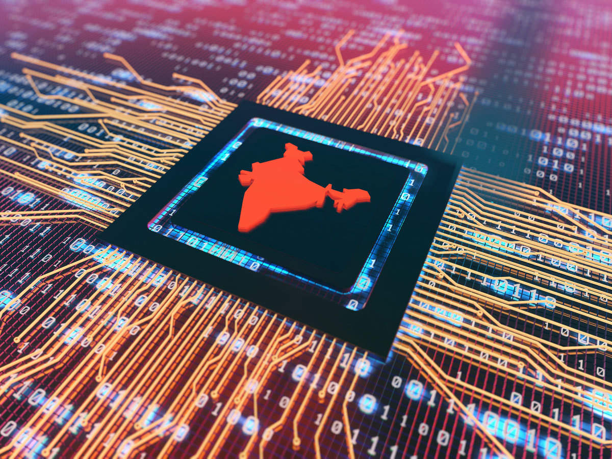

Economical Sector
The services sector is the largest sector of India. Gross Value Added (GVA) at current prices for the services sector is estimated at 96.54 lakh crore INR in 2020-21. The services sector accounts for 53.89% of total India's GVA of 179.15 lakh crore Indian rupees. India accounted for 7.2% of global economy in 2022 in PPP terms, and around 3.4% in nominal terms in 2022.
Information And Technology Sector
In the recent years, rising income inequality and jobless growth have been subjects of discussion and debate. A February 2018 New World Wealth report (‘Global Wealth Migration Review’, goo.gl/R9x5qX) claimed that India is the second-most ‘unequal’ country in the world, with millionaires controlling 54% of the wealth. In Japan, the most equal country, millionaires control only 22% of national wealth.
Agriculture Sector
Indian agriculture sector has the second largest agricultural land globally however, multiple challenges hold back its progress Agriculture plays a huge role in shaping the national economy by contributing ~16% to India’s GDP with 44% of the total workforce employed in it. Though the overall sector is growing, the stress due to declining favourable inputs is on the rise. Despite India being an agrarian economy and a top producer and exporter of several agricultural commodities, multiple challenges such as high weather dependency, supply chain inefficiencies, depleting resources and low productivity hold back the sector from performing to its potential.
Health Sector
As of 2021, the Indian healthcare sector is one of India's largest employers as it employs a total of 4.7 million people. The sector has generated 2.7 million additional jobs in India between 2017-22 - over 500,000 new jobs per year. he private health sector offers high-quality health care at a fraction of the price of hospitals in developed countries. Even though it is relatively less costly, it can still be a burden to the average Indian citizen. The private sector attracts many foreign patients, which makes India a hot spot for medical tourism. According to the World Bank, infant mortality in India fell from 66 to 38 per 1,000 live births from 2000 to 2015.